### dev.js, dataops & devops <img height="100" style="border : 0;box-shadow: none;" data-src="img/matchID-logo.svg" alt="matchID"> les prétextes et la génèse de [deces.matchid.io](https://deces.matchid.io) <small>fabien.antoine@m4x.org</small>
## L'objectif Publier un moteur de recherche des décès <img width="100%" style="border:0;box-shadow: none;" data-src="img/moteur_deces.png" alt="deces.matchid.io">
## L'opportunité <div class="container center"> <div class="col"> début 2017...<br/> <img height="150px" style="border : 0;box-shadow: none;" data-src="img/logo_mi.png" alt="logo ministère de l'Intérieur"> <br/> <small>au "MI", le projet matchID réalise en POC un moteur de recherche des décès avec le fichier INSEE, alors fermé</small> </div> <div class="col"> ... fin 2019<br/> <img height="150px" style="border : 0;box-shadow: none;" data-src="img/logo_insee.svg" alt="logo Insee"> <br/> <small>l'INSEE publie l'ensemble des 25 millions d'enregistrements de décès depuis 1970 <a href="https://www.data.gouv.fr/fr/datasets/fichier-des-personnes-decedees/)">data.gouv</a></small> </div> </div>
## Les envies - valoriser l'effort d'ouverture de l'INSEE - capitaliser sur l'expérience du ministère - offrir un service minimal gratuit - découvrir d'autres framework .js - évaluer plusieurs IaaS de la French Tech
## Le plan de marche <small class="higher-24"> 20 décembre <div class="container center"> <div class="col"> dev<br/> reuse search-ui<br/><br/> ↘️ </div> <div class="col"> reuse dataprep<br/> S3 matchID<br/><br/> ↙️ </div> </div> 1er janvier 2020<br/> <b>publication <a href="https://personnes-decedees.matchid.io">deces.matchid.io</a></b><br/> 👵 <b>découverte du public généalogiste 👴</b><br/> debug<br/><br/> ↙️ ↘️ <div class="container center"> <div class="col"> 🔄 CI/CD devops<br/> custom svelt.js<br/><br/> ↘️ </div> <div class="col"> 🔄 dataops<br/> IaaS matchID<br/><br/> ↙️ </div> </div> 30 janvier<br/> ⚡ <b>évolutions continue</b> ⚡ </small>
## Après 1 mois 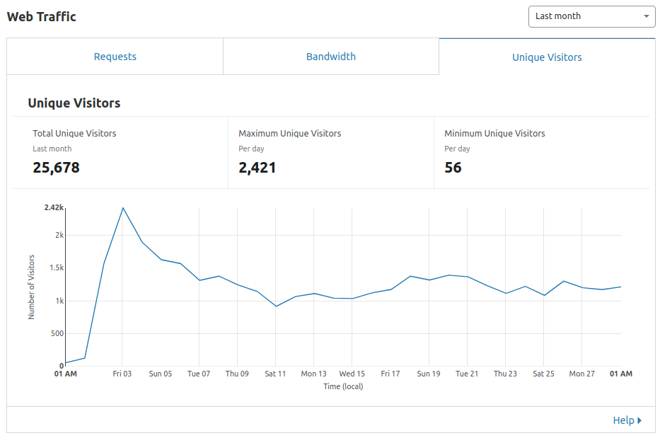 <small> <ul> <li>un traffic stabilisé à ~1100 utilisateurs / jour</li> <li>un coût récurrent de serveurs ~ 15€/mois</li> <li>un service scalable en un clic</li> <li>des évolutions fonctionnelles à venir</li> </ul> </small>
## Replay tech au menu <ul> <li>data et stockage objet</li> <li>compute data multi-cloud</li> <li>dev front JS</li> <li>CI/CD et IaC</li> </ul> <small><small> key words:<br/> dev React.js search-ui svelte.js elasticsearch<br/> dataops S3 matchID<br/> EC2 Nova OpenStack Scaleway OVH Outscale AWS IaaS<br/> devops CI/CD docker travis nginx NodeQuery<br/> CDN Cloudflare SEO Google Search Console Google Analytics<br/> </small></small>
## Archi OPS 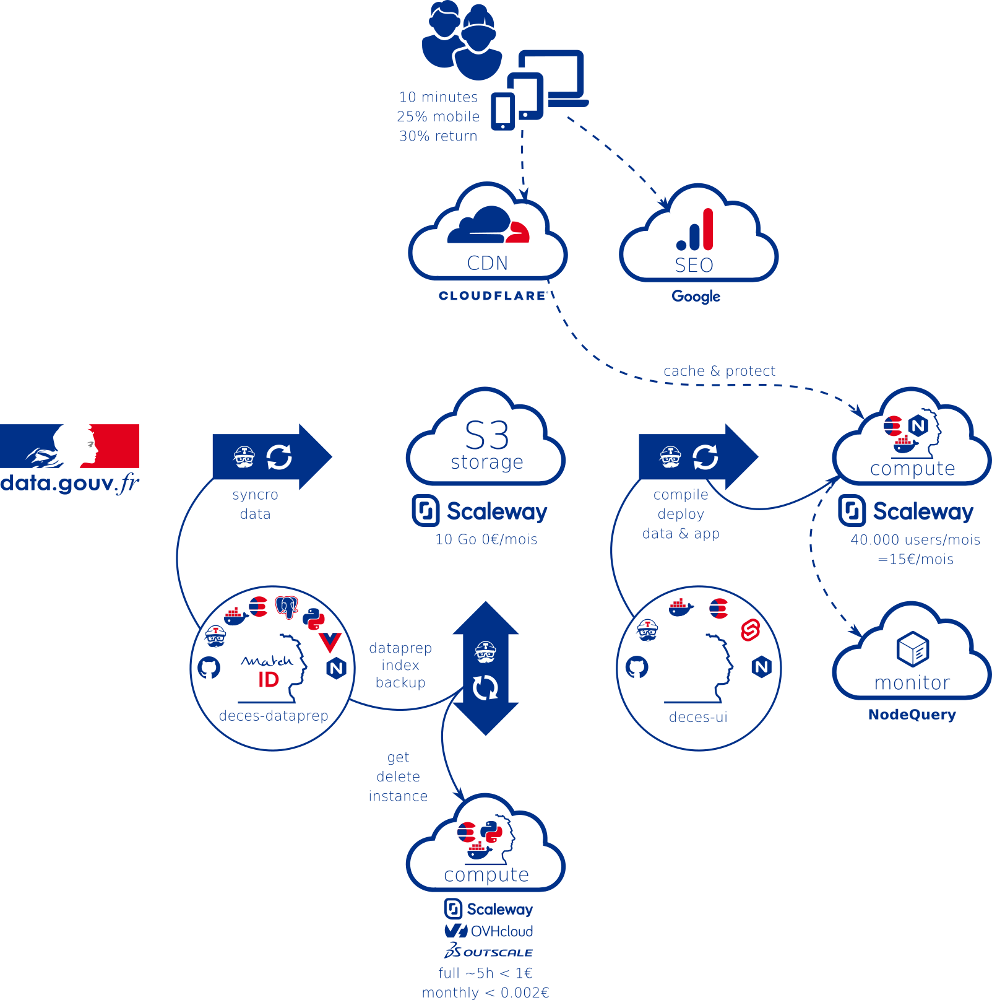
## Data sources <ul> <li>source INSEE</li> <li>catalogue et APIs data.gouv</li> <li>stockage objet S3</li> </ul>
## La source INSEE <small> <ul> <li>nom, prénom(s)</li> <li>date/lieu de naissance/décès</li> <li>n° d'acte de décès</li> <br/> <li>25 millions d'enregistrements</li> <li>49 fichiers, 730Mo compressé</li> <li>environ 620k décès/an aujourd'hui</li> <br/> <li><i>fixed width file</i> (champs fixes) </li> <li><i>~ascii (sauf quelques lignes...) </li> </ul> </small> <small><pre><code> DUCRET*MARIE ANTOINETTE/ 21922010901004AMBERIEU-EN-BUGEY 19701210014216 GRANGEON*ERIC JEAN REMY/ 11969032901004AMBERIEU-EN-BUGEY 19700425693831059 VELLET*PHILIPPE/ 11970020101004AMBERIEU-EN-BUGEY 197002030100412 PRESSAVIN*LYDIE/ 21970040601004AMBERIEU-EN-BUGEY 197004060100433 DOUAT*MARIE-SYLVIA MARTINE/ 21970070801004AMBERIEU-EN-BUGEY 1970070801053457 </code></pre></small> 🤮 🤮 🤮 <small><small>(merci quand même à l'INSEE : c'est bien moche mais très carré - et précieux !)</small></small>
## Le catalogue [DATA.GOUV](https://www.data.gouv.fr/fr/datasets/fichier-des-personnes-decedees) <div class="container center"> <div class="col"> <small> data.gouv c'est une plateforme de publication de données ouvertes - en quelques chiffres : </small><br/> <img style="border : 0;box-shadow: none;" data-src="img/data_gouv_chiffres.png" alt="chiffres data.gouv"> <br/> </div> <div class="col"> <small>on y retrouve les 49 fichiers INSEE, faciles d'accès, et quelques réutilisations</small> <a href="https://www.data.gouv.fr/fr/datasets/fichier-des-personnes-decedees"> <img width="350px" style="border : 0;box-shadow: none;" data-src="img/data_gouv.png" alt="site data.gouv"> </a> </div> </div>
## [L'API data.gouv](https://doc.data.gouv.fr/api/reference/#/) <div class="container"> <div class="col left"> <small> <p> Télécharger 49 fichier à la main, c'est simple mais peu réaliste pour des opérations récurrentes. </p> <p> Heureusement, l'API de data.gouv existe, très lisible et documentée en Swagger via FlaskRestPlus :<br/> <small><a href="https://doc.data.gouv.fr/api/reference/#/"><code> https://doc.data.gouv.fr/api/reference/#/</code></a></small> </p> <p> Le endpoint pour notre dataset est : <br> <small> <a href="https://www.data.gouv.fr/api/1/datasets/fichier-des-personnes-decedees"> <code "is-small">https://www.data.gouv.fr/api/1/datasets/fichier-des-personnes-decedees</code> </a> </small> </p> <p> Le schéma du JSON est épais, le chemin qui nous intéresse est <code>resources.url</code>. </p> </small> </div> <div class="col left"> <small> <p> Pour récupérer les 49 fichiers en shell et les compresser : </p> <small><code> curl -s https://www.data.gouv.fr/api/1/datasets/fichier-des-personnes-decedees/ | jq '.resources[].url' | sed 's/^/curl -s /;s:/\(deces-.*\)":/\1" | gzip > \1.gz:' | sh </code></small> <p> N'hésitez pas à décomposer la commande pour les curieux </p> <p> Vous noterez l'utilisation de <a href="https://stedolan.github.io/jq/"><code>jq</code></a>. Cet outil est devenu incontournable à l'ère des API, pour ceux qui font encore du shell. </p> <p> Pour les habitués de langage plus évolués Python ou JS, la récupération ne sort pas des habitudes. </p> </small> </div>
## Stockage objet - S3 <div class="container higher"> <div class="col left"> <small> <p> Le stockage objet est arrivé avec le monde <b>cloud</b>: S3 AWS, Swift OS, Blob Azure, Cloud storage GCP... </p> <p/> C'est le stockage <b>gros volume</b>, par opposition au stockage bloc (prérequis du compute, intégré aux API type EC2) </p> <p> C'est le <b>partage de fichier</b>, il unifie: le samba/nfs, le sftp, le webdav. On peut même l'utiliser en collaboratif (partage Windows ou sur le cloud type NextCloud). </p> <p> C'est aussi la <b>sauvegardes</b> des nouvelles architectures (base de donnée, ...), l'archivage légal restant pour un stockage archive de type Amazon Glacier. </p> </small> </div> <div class="col left"> <small> <p> Le bénéfice ? Des <b>SLA et tarifs très clairs</b> pour un achat à l'usage réel, ponctuel ou pas, pour des <b>gigas ou des pétas</b>. </p> <p >Un résilience jusqu'à 99.9999+% selon le nombre de réplicats (3 à 6) le plus souvent configurables, et des débits au rendez-vous : 30Mo/s à plus de 150Mo/s. </p> <p> Le <b>standard d'API est maintenant clairement S3</b> même en OpenStack. </p> <p> Dans la French Tech, <a href="https://www.scaleway.com/fr/object-storage/">Scaleway</a>, <a href="https://docs.ovh.com/gb/en/public-cloud/getting_started_with_the_swift_S3_API/">OVH</a>, et <a href="https://fr.outscale.com/solutions-stockage-cloud/stockage-objet/">Outscale</a> offrent le stockage objet accessible avec les API S3. <p> <p> Un stockage Cloud donc, mais avec une localisation possible et un choix de fournisseurs large <b>#RGPD</b> </p> </small> </div> </div>
## S3 et data <div class="container higher"> <div class="col left"> <small> <p> On y accède bien sûr via une IHM facile en drag'n drop chez ls fournisseurs, mais on se rabat sur un NextCloud si c'est l'objecitif n'est pas de soulever le capôt. Tous les langages orienté offrent un support avancé aux API S3. </p> <p> Et bien sur, toutes solutions de data le supportent: Kafka, Airflow, Talend, Dataiku, Hadoop (HDFS over S3) ... et maintenant 🤩 matchID 🤩. </p> <p> Donc, aujourd'hui, <b>la donnée à froid</b>, c'est en S3 !</p> </small> </div> <div class="col left"> <small> <p> L'accès par API stockage objet vient avec ses méthode d'authentification. E.g chez Scaleway: <small><code><a href="https://www.scaleway.com/en/docs/s3-object-storage-api/"> https://www.scaleway.com/en/docs/s3-object-storage-api/</a></code></small> </p> <p> Pour poser (après <a href="https://www.scaleway.com/en/docs/object-storage-with-aws-cli/">configuration</a>) les data de l'INSEE sur le stockage S3, il faut la cli <code>aws</code>: <pre class="higher-24"><code> foreach file in (deces-*);do\ aws s3 cp $file s3://your-bucket/$file; done </code></pre> </p> <p class="higher-24"> Simple non ? </p> </small> </div> </div>
## S3 récupérer les données <small> <p> Du coup, les données de data.gouv sont dupliquées <a href=https://fichier-des-personnes-decedees.s3.fr-par.scw.cloud/">ici en accès public S3</a> </p> <p> On les récupère ainsi sans compte Scaleway: <pre class="center"><code> bucket=https://fichier-des-personnes-decedees.s3.fr-par.scw.cloud/;\ files=$(curl -s ${bucket}\ | xq -r '.ListBucketResult.Contents[].Key | select(contains("deces"))');\ for file in $files; do\ [ ! -f $file ] && (curl -s ${bucket}/$file > $file ) && \ echo $file downloaded;\ done </code></pre> </p> <p> Ce qui me permet de poursuivre la pub de <code>jq</code> avec son dérivatif xml <a href="https://github.com/jeffbr13/xq"><code>xq</code></a>, pour parser les chemins xml en cli. Il y a le même en yaml (<a href="https://github.com/kislyuk/yq"><code>yq</code></a>), et même en html (<code><a href="https://github.com/rbwinslow/hq">hq</a></code>) </p> </small>
## S3 - dark sides ? <div class="container center"> <div class="col left"> <small> <p> Il y a S3 et S3... Ainsi chez Scaleway toutes les méthodes de la cli <code>aws</code> ne sont pas implémentées, il y a même une <a href="https://www.scaleway.com/en/docs/s3-object-storage-api/">roadmap</a>. </p> <p> A noter notamment : <ul> <li>Les options de chiffrement, nombreuses chez AWS (arrive Q1 2020 chez Scaleway)</li> <li>La réplication de bucket</li> <li>La gestion de tokens temporaires, scopés qui peut sécuriser l'automatisation (possible dans Swift d'OpenStack ou AWS </li> </ul> </p> </small> </div> <div class="col left"> <small> <p> La tarification est importante à analyser, les points d'attention: <ul> <li>un quota gratuit (75Go chez Scaleway)</li> <li>le tarif initial Go est attractif (~ 0.01€ mensuel)</li> <li>on paye le tarif sortant (hors du fournisseur)s</li> <li>réplicats: plus de résilience = plus de réplicats = plus cher</li> </ul> </p> </small> </div> </div> <small> La modalité de facturation à l'usage est vertueuse: elle pousse à essayer, et à optimiser<br/> Pour le projet présenté,ma facture est toujours à <b>0 €</b> chez Scaleway:<br/> 1Go pour les données sources, 8.8Go pour la sauvegarde de l'index </small>
## Dataops avec <img height="100px" style="border:0;box-shadow: none;" data-src="img/matchID-logo.svg" alt="matchid logo">
## Pourquoi matchID <small class="left"> <p> <a href="https://www.matchid.io/" target="_blank">matchID</a> a été créé initialement pour ouvrir à d'autres administration les travaux de <i>data matching</i> réalisés initialement en POC avec Dataiku 🦄 </p> <p> Nous avons approfondi la notion de <b>recettes simplifiées et interactives</b>, qui accélèrent le travail de dataprep, en ajoutant les appels imbriqués et favorisant gestion de version via Gitlab ou un Github. Pour une meilleure <b>collaboration entre dev et data</b>. </p> <p> La data du projet est donc réalisée avec matchID, et le code est sur <a href="https://github.com/matchID-project/deces-dataprep" target="_blank">Github</a>. </p> <p> Pour visualiser les recettes du projet: </p> </small> <pre><code> git clone https://github.com/matchID-project/deces-dataprep cd deces-dataprep make dev FILES_TO_PROCESS=deces-1970.txt.gz </code></pre> <small> <p> matchID se lance, un peu de patience, rendez-vous <a target="blank" href="http://localhost:8081/matchID/projects/deces-dataprep/datasets/deces_src">ici sur votre navigateur</a>. </p> </small>
## DONNEES INSEE sur matchID <a target="blank" href="http://localhost:8081/matchID/projects/deces-dataprep/datasets/deces_src"> 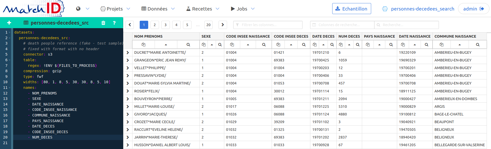</a> <small> Quelques points à noter: <ul> <li>la déclaration de dataset dans matchID est faite en <a href="https://yaml.org/">Yaml</a></li> <li>les données sont lues directement depuis le stockage S3</li> <li>les champs fixes sont déclarés dans le champ <code>widths</code></li> <li>jouez avec les filtres qui permettent de filtrer les lignes et les colonnes</li> </ul> </small>
## Dataprep pour indexation <small class="left"> Les traitements sont pensés faciliter la recherche par indexation: <ul> <li>les données sont normalisées en ascii (il y a quelques erreurs d'encodage dans les fichiers INSEE</li> <li>le libellé de commune de décès (ou pays) est récupéré via le référentiel INSEE</li> <li>idem pour le pays de naissance et de décès</li> <li>l'historique de commune est utilisée pour les variantes de libellés de communes</li> </ul> </small> <a class="higher-24" target="_blank" href="http://localhost:8081/matchID/projects/deces-dataprep/recipes/deces_dataprep"> <img width="100%" style="border:0;box-shadow: none;" data-src="img/matchID-dataprep.png" alt="matchid datapre"></a> <small class="left"> Cliquez sur l'image ci-dessus pour vous rendre sur la recette, et appuyez sur le bouton "Lancer" pour indexer l'année 1970 (45 secondes environ). </small>
## Indexation Elasticsearch <a target="_blank" href="http://localhost:8081/matchID/projects/deces-dataprep/datasets/deces_index"> <img width="100%" style="border:0;box-shadow: none;" data-src="img/matchID-index.png" alt="matchid index"></a> <small class="higher-24"><small>Cliquez sur l'image pour visualiser les données</small></small> <small class="left higher"> L'indexation Elasticsearch est une opération peu intuitive: <ul> <li>matchID facilite l'indexation avec l'automatisation de la création du mapping</li> <li>plusieurs colonnes avec des indexations différenciées sont créées</li> <li>le edge ngram est utilisé pour tokenizer à l'indexation mais pas à la recherche (pour l'autocomplete)</li> <li>l'indexation floue "auto" est utilisée (distance de Levensthein à 2 pour les noms longs, 1 pour les noms courts, 0 pour les très courts</li> <li>la date de naissance et de décès sont également accessibles en recherche floue</li> </ul> </small>
## Dataops avec matchID <div class="container higher"> <div class="col left"> <small> <p> Le traitement via l'interface web matchID est pratique pour développer. </p> <p> Mais le traitement complet est long, et pour améliorer l'UI, la phase de dev demande au dataops une nouvelle mouture. A forces de cycles, on automatise. </p> <p> Pour automatiser, il y a un mode cli (qui utilise l'API Rest de matchID). Ainsi, pour "cliquer" sur le bouton "Lancer": </p> <small><code> make recipe-run FILES_TO_PROCEED=deces-1970.txt.gz </code></small> <p> Pour configurer la machine, installer le minimum (sans IHM) lance matchID, sauvegarde l'index Elasticsearch sur S3 : </p> <small><code style="margin-top:32px!important"> make all FILES_TO_PROCEED=deces-1970.txt.gz </code></small><br/> <p> </p> </small> </div> <div class="col left"> <small> <p> Pour commander une machine sur une machine sur Scaleway, y déploie matchID, lance le traitement complet (4h30 à 8h selon l'instance), sauvegarde sur S3, et décommissionne la machine. </p> <small><code> make remote-all CLOUD=SCW </code></small><br/> <p> Nous avons testé ce process avec l'OpenStack d'OVH (<code>CLOUD=OS</code>) et l'EC2 TinaOS d'Outscale (<code>CLOUD=EC2</code>), en utilisant la cli <code>aws</code>. </p> <p> Nous détaillerons plus tard le retour sur les 3 clouders, mais tous sont très satisfaisant avec des niveaux de sécurité différents. Mon portefeuille étant l'arbitre et le sujet traité full open, je suis resté chez Scaleway. </p> </small> </div> </div>
## Messages - S3 rend possible le déport du compute data d'un IaaS à un autre sans aucune adaptation - un projet dataops doit être géré en code du traitement jusqu'au déploiement cloud - <img height="50px" style="margin-bottom:-10px;border:0;box-shadow: none;" data-src="img/matchID-logo.svg" alt="matchid logo"> dispose maintenant du connecteur S3 et pilotage multi-IaaS qui le rendent Cloud hybride compliant
## Search UI développement de l'interface [deces.matchid.io](https://deces.matchid.io) de React à Svelte <img height="100px" style="border:0;box-shadow: none;" data-src="img/Svelte_Logo.svg" alt="svelte logo">
## LES OPTIONS <div class="container higher-24"> <div class="col left"> <small> <p> <a href="https://twitter.com/tainmar?lang=fr" target="_blank">Martin</a> avait fait en 2 jours en 2017 une première démo super fluide en infinite scroll et requête instantanée. </p> 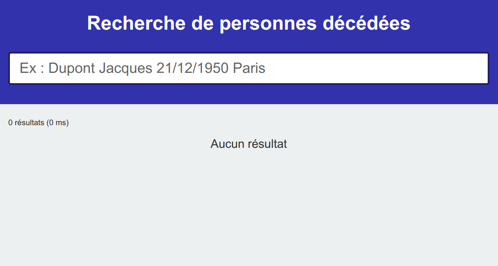 <p> Le screenshot ne fait pas honneur: c'était vraiment sexy. Mais, parti du ministère, pas de trace du proto, malgré le nombre d'ouvertures de sources réalisées au sein du <a href="https://github.com/matchid-project/" target="_blank">projet matchID</a>. </p> </small> </div> <div class="col left"> <small> <p> <img height="36px" style="margin-top: 0px;border:0;box-shadow: none;" src="img/angular-icon.svg"> Le code était en Angular 1 et JQuery, c'était un proto. Parfait prétexte pour voir autre chose en 2020. </p> <p> <img height="36px" style="margin-top: 0px;border:0;box-shadow: none;" src="img/Vue.js_Logo_2.svg">L'UI matchID est en Vue.js, depuis j'avais approfondi le scaffolding et le CI avec <a href="https://histovec.interieur.gouv.fr" target="_blank">HistoVec</a> - valeur refuge en cas d'égarrement </p> <img height="36px" style="margin-top: 0px;border:0;box-shadow: none;" src="img/Svelte_Logo.svg"><a href="https://cristianpb.github.io/blog" target="_blank"> Cristian</a> m'avait parlé de Svelte, comme framework js qui monte. </p> A côté, <a href="https://swiftype.com/search-ui" target="_blank">Swiftype</a> publie son code pour des UI pour Elastic - en React. </p> </small> </div> </div>
## <a href="https://swiftype.com/search-ui" target="_blank">Swiftype</a> Search-UI <div class="container higher-24"> <div class="col left"> <small> <p> La lib sépare bien un moteur js et l'UI React. La <a href="https://github.com/elastic/search-ui/blob/master/ADVANCED.md" target="_blank">documentation</a> est très fournie. Il y a même un reuse avec Vue, mais le contexte React est plus riche. </p> <a href="https://swiftype.com/search-ui" target="_blank">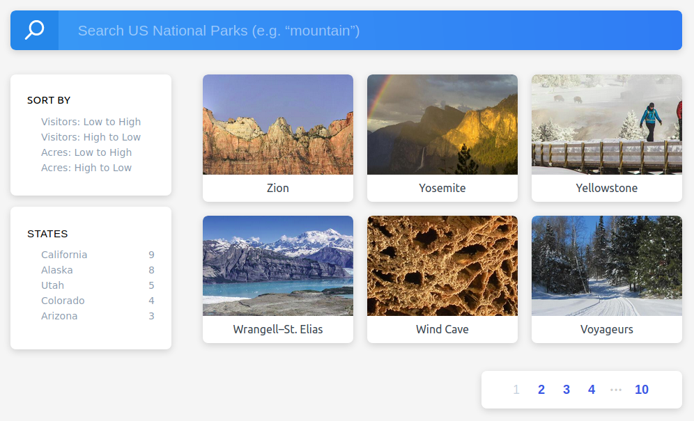</a> <p> Enthousiaste de découvrir React, je lance la première version le 1er janvier 2020 avec cette lib. </p> </small> </div> <div class="col left"> <small> <p> <b>Résultats</b> </p> <p> Première version ergonomique développée en quelques jours. </p> <p> L'application publiée remporte beaucoup de succès (plus de 1000 utilisateurs/jour). </p> <p> Je découvre le public des généalogistes, très positifs sur le site. </p> <p> Le plus long in fine pour la première version du site était : <ul style="margin-top:-16px"> <li>l'harmonisation CSS Bulma avec le site matchID</li> <li>l'optimisation des requêtes elaticsearch</li> <li>les itérations dataprep pour des données bien indexées</li> </ul> </p> </small> </div> </div>
## + <a href="https://swiftype.com/search-ui" target="_blank">Swiftype</a> Search-UI - <div class="container"> <div class="col"> 😊😊😊😊<br/> <small> <ul> <li>autocomplete, pagination</li> <li>facettes de navigation</li> <li>premiers résultats rapides</li> <li>industriel (doc, scaffolding, gestion des erreurs)</li> </ul> </small> <br/><br/> </div> <div class="col"> 😔😔<br/> <small> <ul> <li>tweaking complexe</li> <li>recherche multi champs impossible</li> </ul> </small> </div> </div> <small style="width:75%" class="left higher"> <p> Malheureusement, la première demande des utilisateurs était une recherche multichamps. La complexité des interactions entre l'Autocomplete et la Searchbox rend plus aisé une reconception ab initio pour ce cas d'usage. </p> <p> A vrai dire, l'expérience lourde de React et JSX m'a aussi semblé particulièrement indigeste après Vue.js </p> </small>
## Svelte.js <img height="100px" style="border:0;box-shadow: none;" data-src="img/Svelte_Logo.svg" alt="svelte logo"> Un exemple concret pour illustrer
Démo
sur le REPL Svelte.dev
le rendu ➡️➡️➡️
testez le formulaire
⬅️⬅️⬅️ le code
la variable 'query' est liée au formulaire input
la forme réactive '$' déclenche la requête api à chaque changement de la variable 'query'
## Le tutoriel <a href="https://svelte.dev/tutorial/basics" target="_blank">Svelte.dev</a> <img height="100px" style="border:0;box-shadow: none;" data-src="img/Svelte_Logo.svg" alt="svelte logo"> L'utilisation du REPL est un vrai point fort pour démarrer en Svelte en quelques minutes
enjoy to learn !
## [REPL.it](https://repl.it/") <small> Les REPL c'est pratique... Il en existe pour d'autres langages: Python, Node, cf. <a href="https://repl.it/" target="_blank">REPL.it</a><br/> Ou pour faire ces slides ... directement depuis Github, zéro install </small> 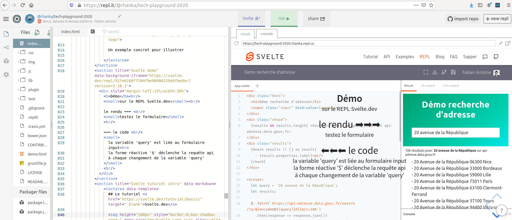
### Svelte sur [deces.matchid.io](deces.matchid.io) <img height="100px" style="border:0;box-shadow: none;" data-src="img/Svelte_Logo.svg" alt="svelte logo"> <div class="container"> <div class="col"> 😊😊😊😊 <small> <ul> <li>sans beaucoup d'efforts 98% au score <a href="https://developers.google.com/speed/pagespeed/insights/?hl=fr&url=https%3A%2F%2Fdeces.matchid.io" target="_blank">Google PSI</a></li> <li>taille après build et zip: React: 896ko , Svelte: 30ko</li> <li>syntaxe allégée et puissamment simplificatrice</li> <li>rollup remplace agréablement webpack</li> </ul> </small> </div> <div class="col"> 😔😔<br/> <small> <ul> <li>bulma: svelma pas assez mûr (modal, burger)</li> <li>routeur svelte-spa-routeur pas assez configurable</li> <li>pas de packet google analytics (mais quelques lignes suffisent)</li> </ul> </small> </div> </div><br/> <small> grâce à Svelte, le mode recherche avancée est maintenant <a href="https://deces.matchid.io/?advanced=true" target="_blank">disponible sur deces.matchid.io</a> </small>
## Svelte est léger <small style="width:100%" class="left"> L'économie de bande passante est concrète - à nombre d'utilisateurs ~ constant:<br/> <ul> <li>-60% = chargement de pages</li> <li>-30% = appels API par l'autocomplete régulés (possible grâce à un dév custom) </li> </ul> </small> 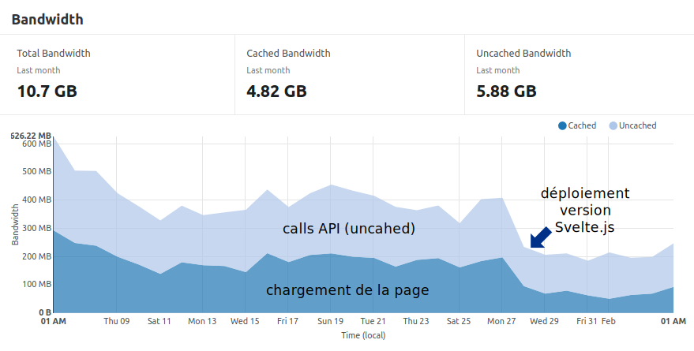
### + Svelte.js en résumé - <img height="100px" style="border:0;box-shadow: none;" data-src="img/Svelte_Logo.svg" alt="svelte logo"> <div class="container"> <div class="col"> 😊😊😊😊 <small> <ul> <li>moins de code : réactivité, store, composants</li> <li>légèreté et optimisation</li> <li>réactivité accrue grâce au compilateur</li> <li><b>😍 Tutoriel interactif 😍</b></li> </ul> </small> <br/><br/> à choisir : <small> <ul> <li>si vous aimez la liberté du DIY</li> <li>les syntaxes rapides</li> </ul> </small> </div> <div class="col"> 😔😔<br/> <small> <ul> <li>écosystème npm pauvre</li> <li>idem côté stackoverflow</li> <li>scaffolding</li> </ul> </small><br/><br/><br/> à éviter : <small> <ul> <li>si vous aimez le préfabriqué</li> <li>si craignez le hors piste</li> </ul> </small> </div> </div>
## SEO <ul> <li>SEO tools</li> <li>Search Console</li> <li>PageSpeed Insights</li> <li>Google Analytics</li> </ul>
## Numérique connaître l'usage <div class="container higher-24"> <div class="col left"> <small> <p> En 2013 Syntec introduisait le terme ESN (<a href="https://fr.wikipedia.org/wiki/Entreprise_de_services_du_num%C3%A9rique" target="_blank">Entreprises de service numérique)</a>, pour succéder aux "SSII". </p> <p> En 2020 l'ensemble des "DSI" de l'État sont des <a href="https://www.numerique.gouv.fr/dinum/" target="_blank">DNUM</a>. </p> <p> Le digital a apporté son lot de termes: <a target="_blank" href="https://fr.wikipedia.org/wiki/Interface_utilisateur">UI</a>, <a target="_blank" href="https://fr.wikipedia.org/wiki/Exp%C3%A9rience_utilisateur">UX</a>, <a target="_blank" href="https://fr.wikipedia.org/wiki/Scrum_(d%C3%A9veloppement)">PO</a>, <a target="_blank" href="https://en.wikipedia.org/wiki/Business_intelligence">BI & big data</a>, </p> <p> Les grandes structures héritant des DSI ont tendance à appliquer la méthode d'inclusion des buzzword en les vidant de leur philosophie. </p> </small> </div> <div class="col left"> <small> <p> Le seul véritable pattern différenciant c'est de <a href="https://f14e.fr/2020/01/23/who-are-the-maddest/" target="_blank">tester avec sincérité le client pour le comprendre</a>, le cibler, se remettre en question. </p> <p> Le <a target="_blank" href="https://fr.wikipedia.org/wiki/Optimisation_pour_les_moteurs_de_recherche">SEO</a> a tendance est une des facettes orienté compérhension client (marketing) qui aide à faire converge un produit vers son public, qualifié. </p> <p> L'éthique RGPD est heureusement bien ancrée dans l'administration. Mais elle freine l'usage d'outils facilitant l'amélioration de la qualité du service. </p> </small> </div> </div>
## analyse SEO <div class="container center higher"> <div class="col left"> <small> <p> Le monde SEO est très commercial. Plein d'outils se partagent le marché, avec des audits automatisés gratuits et des services de conseil. </p> <p> Les axes d'analyse d'un site sont plus ou moins: <ul> <li>La description pour les moteurs de recherche (balises meta)</li> <li>Le contenu textuel</li> <li>La vélocité et l'accessibilité mobile</li> <li>Le social</li> </ul> </p> <p> Je ne fais pas de pub pour ça, il y en a plein en cherchant "analyse SEO" sur le web. </p> </small> </div> <div class="col center"> <small> Ça donne ça :<br/> 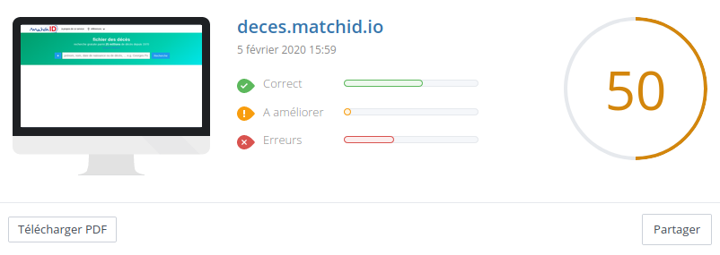 ou ça:<br/> 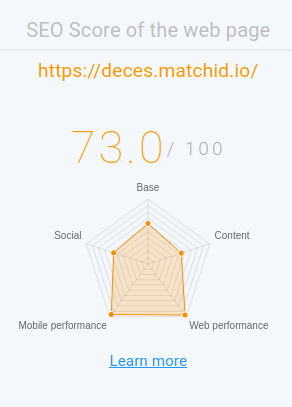 </small> </div> </div>
### Google Search Console <div class="container center higher"> <div class="col left"> <small> <p> Pour les balises meta, <a target="_blank" href="https://www.webrankinfo.com/dossiers/techniques/guide-balises-meta">c'est simple (cf ici)</a>. </p> <p> Pour être sûr de son référencement, le mieux est d'utiliser <a target="_blank" href="https://search.google.com">Google Search Console</a> </p> <p> Il faut bien patienter de 24 à 48h: </p> 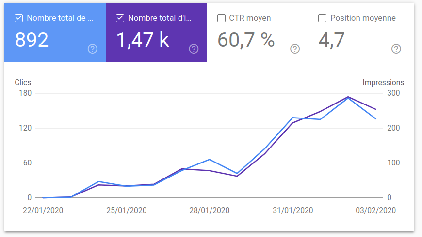 <p> Pour le site, l'une des optimisations SEO a consisté à basculer le sous-nom de domaine de "personnes-decedees" à "deces" (une url courte est un critère SEO). </p> </small> </div> <div class="col left"> <small> <p> La search console permet aussi de voir ce que les gens cherchent pour venir: </p> 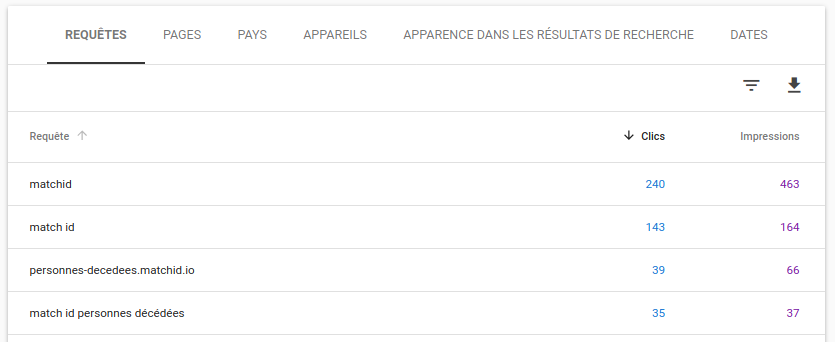 <p> En l'espèce c'est <a target="_blank" href=https://www.data.gouv.fr/fr/reuses/moteur-de-recherche-des-personnes-decedees-matchid/">data.gouv.fr</a> qui a vraiment servi à la publicité du site, et cela aura permis au site de matchid d'être au moins premier sur son propre mot clé. </p> <p> Le terme "décès", lui est beaucoup trop concurrentiel. </p> </small> </div> </div>
### Page speed insights <div class="container center higher"> <div class="col left"> <small> <p> Vous connaissez certainement l'audit F12 Chrome : </p> 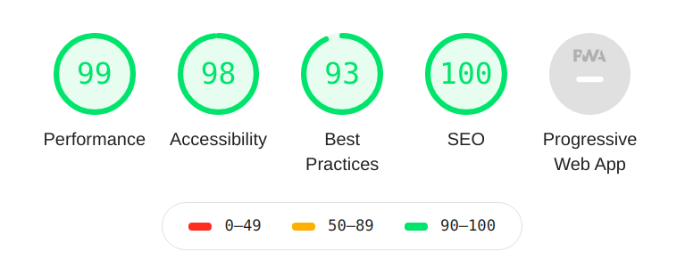 <p> Cette console donne énormément de conseils pour l'optimisation, notamment du temps de chargement, l'optimisation des images, les redirections, etc. </p> <p> Un test via <a target="_blank" href="https://deces.matchid.io/">PageSpeed Insight</a> (toujours Google) permet de s'abstraire de votre réseau (3G ou fibre) et sera plus universel pour vos tests notamment des clients mobiles: </p> </small> </div> <div class="col left"> <small> 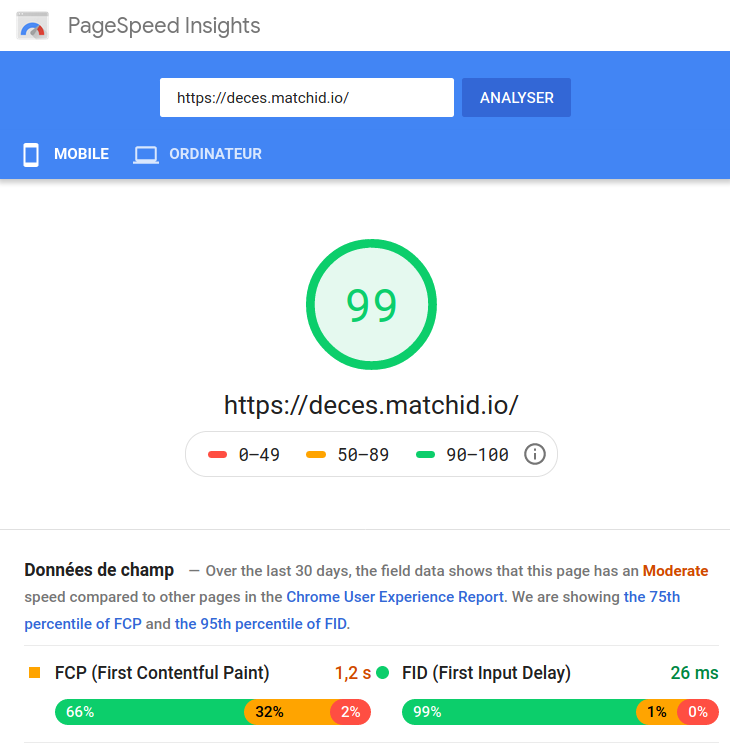 <p> Le test peut être également automatisé via le package <a target="_blank" href="https://www.npmjs.com/package/psi">npm psi</a> (thx <a href="https://cristianpb.github.io/blog" target="_blank"> Cristian</a>) </p> </small> </div> </div> <small class"higher">Note: le score de 99 est facilité par la simplicité voulue pour l'appli - en mobilité les scores de 80% sont déjà très bons</small>
## *Ops la prod pas chère<br/> 💸🤑💸 <small> <ul> <li>CI/CD w/ Docker, Travis & IaaS</li> <li>CDN & Loadbalancing w/ Cloudflare & Ngnix</li> <li>Supervise w/ Downnotifier & NodeQuery</li> </ul> </small>
## Motivations <div class="container"> <div class="col"> <p> Il y a beaucoup de modèles possibles aujourd'hui grâce aux XaaS (IaaS, PaaS, CaaS, FaaS). </p> <p> J'avais parcouru cet <a href="https://medium.com/@abenahmed1/mise-en-oeuvre-dun-cluster-kubernetes-dans-une-instance-amd-epyc-de-scaleway-via-rancher-et-7372a3fc22a6" target="_blank">excellent article</a> sur </p> </div> <div class="col"> <p><b>DevOps</b></p> <p><b>NoOps</b></p> </div> </div>